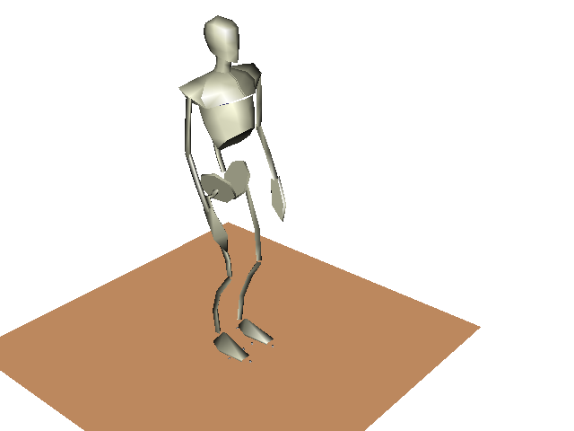
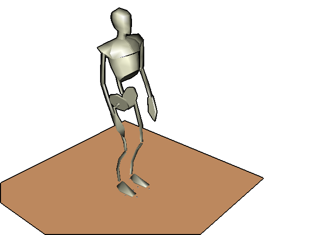

The main software used during my thesis are available on ubuntu:
Create an outline around an image:The idea comes from Aurelien Ibanez, and is: first, to crop the image borders (to draw outlines on the borders), and second to add the black outline.


|